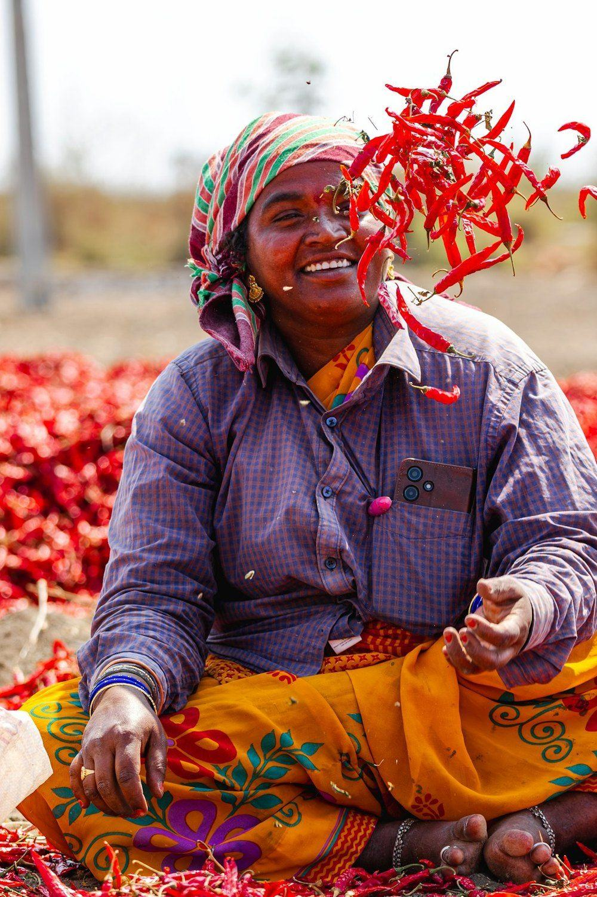
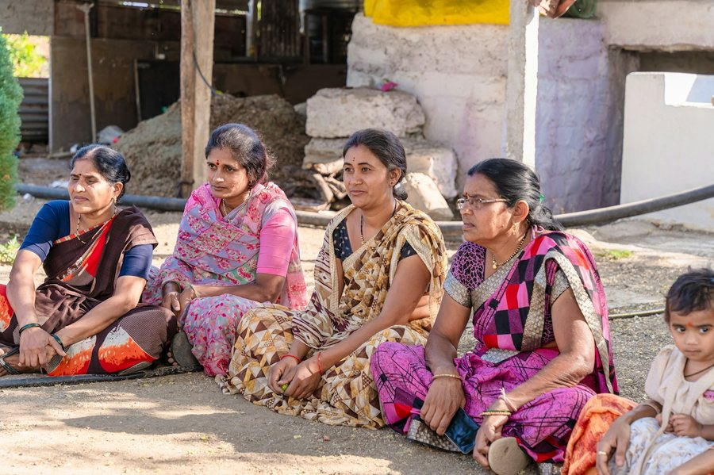
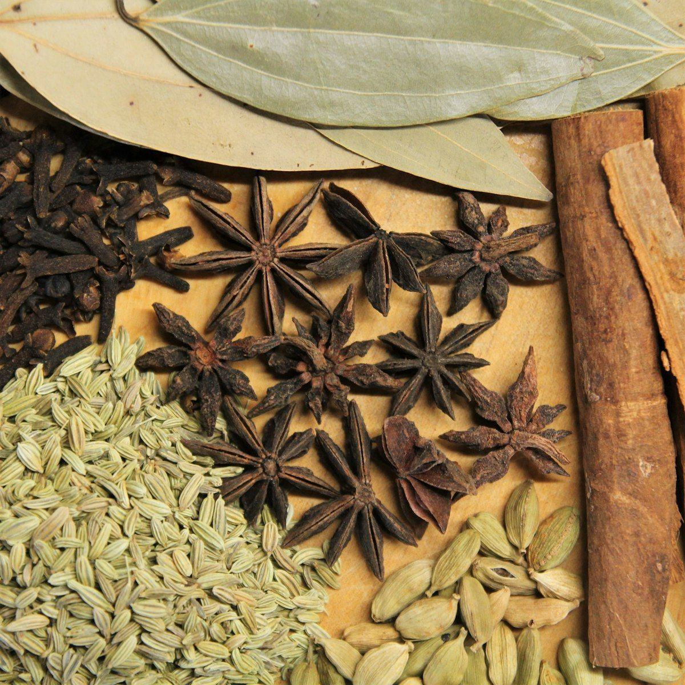
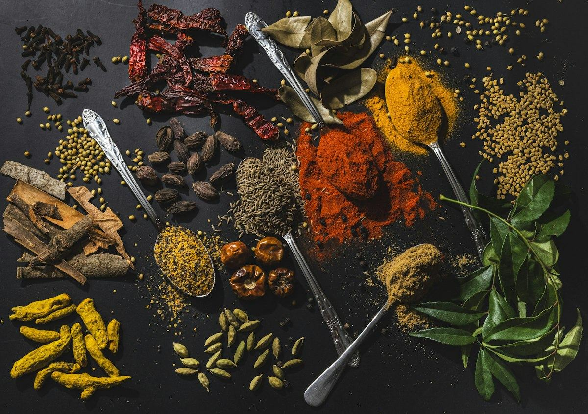
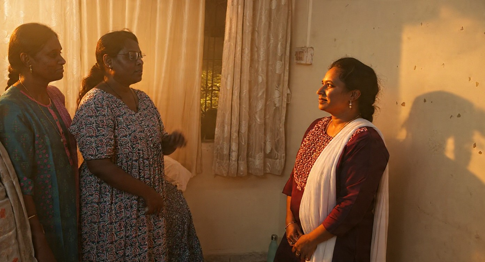

Selected ingredients are roasted and blended at home by women using their own family recipes. Purity begins at home — the work and the wage stay with them.
Everyday kitchen essentials, packed together — the spices, home-made masalas, salt, sweeteners and seeds a kitchen goes through every week, all pure and packed by SATVA.
Turmeric, chilli and coriander ground slowly, so the essential oils and the aroma are not driven off by the heat of the mill. And the everyday masalas built from them. Colour you can see in the pan — from whole dried spice, not from a dye drum.
Whole dhaniya — crush it fresh, or roast it for a masala. Left whole, so the grinding is yours to do. Coriander, cumin, mustard and black pepper left whole for the tadka.
Flax and chia packed in their raw, natural form — cleaned and sieved, no polish, no moisture treatment to make them shine. Grind the flax fresh for chutney; stir the chia into water, curd or a smoothie.
Himalayan pink salt with none of the chemical polish of table salt. Coconut sugar dried from the sap of the palm, and monk fruit sweetener, which is sweet without being sugar at all — the things every single dish passes through, taken as they come.
No synthetic colours, no artificial aromas, no chemical preservatives. Nothing in the pouch that was not a spice first.
Nutrient-preserved grinding
Cold, naturally ground spices that keep the essential oils and the aroma they were grown with — not driven off by heat.
Unpolished goodness
Seeds packed in their raw, natural form — no dangerous polish, no moisture treatment to make them shine.
Uncompromising standards
Sourced from trusted farms, tested for safety, packed with hygiene at the core.
Our mission
“To become India’s most trusted household name in pure, farm-fresh and nutrient-rich daily foods.”
Health is not built in a pharmacy — it is built in your kitchen. When your daily ingredients are honest, your body thrives.
DS Satva Foods

Where it began: summers in a village of chilli, maize and paddy fields
Our story
Rooted in experience.Driven by purity.
Eighteen years watching the food supply chain showed our founder how far everyday staples have drifted from nutrition — synthetic aromas, anti-caking agents, chemical polishes. Satva(सत्त्व) is the essence of life: purity, truth and balance. We exist to bring it back to your daily kitchen.
At DS Satva Foods, our story begins with a simple, unsettling realisation. Having spent over 18 years observing the modern food supply chain, our founder saw first-hand how the basic food on our plates has drifted away from true nutrition. Everyday kitchen staples — the very spices, seeds and grains meant to nourish our families — are increasingly loaded with synthetic aromas, anti-caking agents, chemical polishes and artificial preservatives.
The result? Declining immunity, rising lifestyle disorders, and everyday meals that lack true nourishment.
56.4% of India’s total disease burden is attributable to unhealthy diets.ICMR–NIN, Dietary Guidelines for Indians, May 2024
We created DS Satva Foods to change that story.
The word Satva(सत्त्व) is the absolute essence of life — purity, truth and balance. We exist to bring that exact purity back to your daily kitchen essentials. From naturally stone-ground spices that keep their essential oils, to nutrient-dense seeds and unrefined Pink Himalayan salt, every product we pack is clean, authentic and untouched by harmful chemicals.
We believe health is not built in a pharmacy — it is built in your kitchen. When your daily ingredients are honest, your body thrives.
Our promise
100% authentic & natural. No synthetic colours, artificial aromas or chemical preservatives.
Nutrient-preserved processing. Cold, naturally ground spices that keep their essential oils and aroma.
Unpolished goodness. Seeds packed in their raw, natural form — no dangerous polish, no moisture treatment.
Uncompromising standards. Sourced directly from trusted farms, tested for safety, packed with hygiene at the core.
DS SATVA FOODSDil Se Pure ❤️Chhatrapati Sambhajinagar, Marathwada
Satva Saheli
Pure Food with a Purpose: The Spirit of Satva Saheli
A movement of women micro-entrepreneurs, bringing pure food from their hands to your kitchen.
Crafted by hands you trustMasalas blended to time-tested family recipes.
Driven by financial freedomEvery Saheli runs her own small business.
Trained in qualityFSSAI food safety, hygiene and nutrition.
Two Roles. One Powerful Movement.
The Satva MakerRoasts and blends our masalas at home.

The Satva PromoterBrings healthy staples to her neighbours.
DS SATVA FOODSDil Se Pure… Empowering Lives.+91-9689888822
Packed by Satva Sahelis
Inside every kit
Spices
Turmericहल्दी
Chilli Powderमिर्च
Mustardराई
Cuminजीरा
Corianderधनिया
Distributed by our Sahelis
Garam Masalaगरम मसाला
Sambar Masalaसांबार मसाला
Chatpat Masalaचटपट मसाला

Biryani Masalaबिरयानी मसाला

Meat Masalaमीट मसाला
Healthy essentials
Pink Saltगुलाबी नमक
Coconut Sugarनारियल शक्कर
Chia Seedsचिया
Methiमेथी
Monk Fruitमंक फ्रूट
Pick your own.
How it’s made
The footage shows the process, not our own mill — the owner’s own films replace it the moment they exist.
Cook something for someone
Everyday dishes, each built on something we pack.
Satva Saheli
Empowering Women. Enriching Kitchens.
A saheli is the friend a woman actually turns to. True purity begins at home — so instead of a factory network, we work with women in their own communities, and the work and the wage stay with them.

30+households each Saheli reaches
100%of this work stays local
Become a Satva Saheli
DS SATVA
Call us to join — work from home, on your own hours.